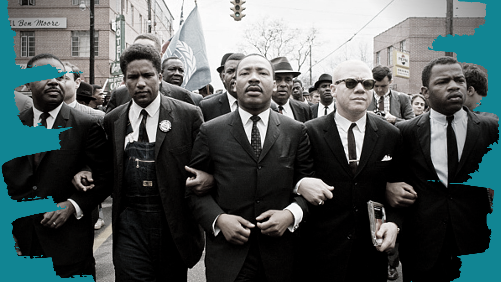

Kingslife

Martin Luther King giving a speech in front of the Lincoln Memorial in Washington D.C"
"No, no, we are not satisfied and will not be satisfied until justice rolls down like water and righteousness like a mighty stream."